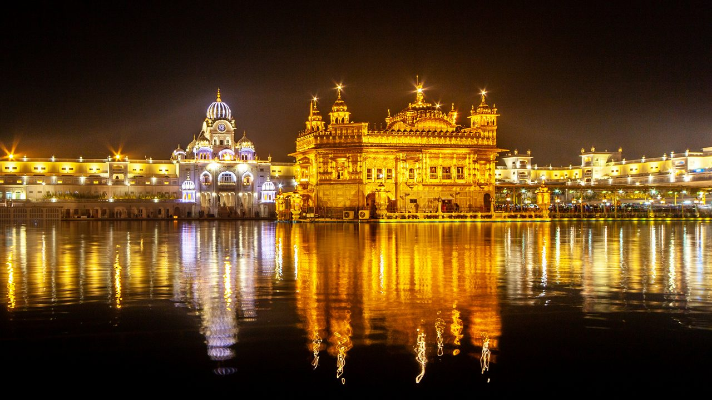
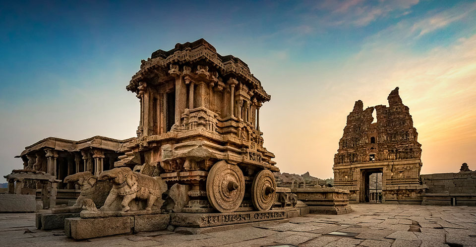

1. Varanasi, Uttar Pradesh
Brief: Known as the spiritual capital of India, Varanasi is a melting pot of rituals, spirituality, and history. Pilgrims come from all over the world to bathe in the sacred waters of the Ganges River, believing it washes away sins. The evening Ganga Aarti at Dashashwamedh Ghat is a spectacular sight, symbolizing devotion and harmony.

Related Deity: Lord Shiva, revered as Kashi Vishwanath in this city.
2. Golden Temple, Punjab
Brief: Also called Harmandir Sahib, the Golden Temple is a symbol of equality and human brotherhood. Its golden dome reflects in the Amrit Sarovar (sacred pool of nectar), and the temple’s serene ambiance is complemented by the continuous recitation of the Guru Granth Sahib, the holy book of Sikhism. The Langar (community kitchen) serves as an embodiment of selfless service.
Related: Guru Granth Sahib, regarded as the eternal Guru of Sikhs.
3. Konark Sun Temple, Odisha
Brief: An architectural marvel, the Konark Sun Temple is shaped like a gigantic chariot with intricately carved wheels and horses. These carvings depict scenes of daily life, mythology, and celestial beings, showcasing the skill of ancient Indian artisans. It’s not only a place of worship but also a testament to Odisha’s historical glory.

Related Deity: Surya, the Sun God, symbolizing vitality and life.
4. Meenakshi Temple, Tamil Nadu
Brief: Located in Madurai, the Meenakshi Temple is a vibrant cultural hub with intricately carved gopurams (tower gateways) painted in vivid colors. The temple celebrates the divine union of Goddess Meenakshi and Lord Shiva, with festivals like Meenakshi Thirukalyanam drawing thousands of devotees annually.

Related Deities: Goddess Meenakshi, a form of Parvati, and Lord Sundareswarar, a form of Shiva.
5. Hampi, Karnataka
Brief: A UNESCO World Heritage Site, Hampi was once a bustling city of the Vijayanagara Empire. Today, it stands as a treasure trove of ancient ruins, including temples, markets, and royal enclosures. The Virupaksha Temple is the city’s oldest structure, and the iconic stone chariot is a symbol of Karnataka's rich history.
Related Deity: Lord Virupaksha, an incarnation of Shiva, worshipped since the 7th century.